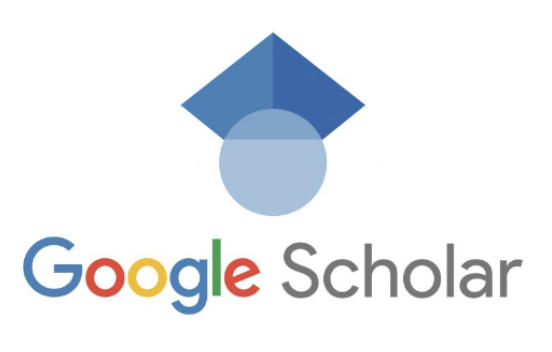

Google Scholar is an online, freely accessible search engine that lets users look for both physical and digital copies of articles. It searches scholarly works from a variety of sources, including academic publishers and universities looking for: Peer-reviewed articles.
JSTOR is a digital library that provides access to a vast collection of academic journals, books, and primary sources, primarily in the humanities and social sciences, and is a valuable resource for researchers and scholars.
The Library of Congress website, accessible at loc.gov, is the online gateway to the world's largest library, offering access to a vast collection of digitized materials, including books, films, audio recordings, and more.
PMC is a full text archive that includes articles from journals reviewed and selected by NLM for archiving (current and historical), as well as individual articles collected for archiving in compliance with funder policies.